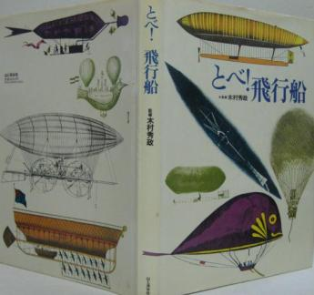

機関誌「ブイヤント航空」
| 誌名 | ブイヤント航空 |
|---|---|
| ISSN | 1344-0527 |
| 創刊 | 1974年6月1日 |
| 刊行 | 年刊 |
| 次号 | Vol.35 2027年5月発行予定（投稿締切：2027年3月31日） |
「ブイヤント航空」発行の趣旨
今を生きる我々が、未来へ伝えたいLTAの知見
LTAに関する知見や学識や造詣を半世紀以上継続して後世へ伝え続けている団体は、日本国内においては本会が唯一であり、世界でも十指に入る歴史を有しています。会誌に収録する内容は、主に日本語による、日本での活動を中心とします。
資料は国内の1次資料（オリジナル）を中心に、海外1次資料の要約（書誌）も含めて収録します。また、国内の2次的資料（再掲や改訂）は原著者のものであれば収録します。2次資料（再掲や改定）は、統計的な内容であれば精力的に収録しますが、原著や出典は必ず明記します。
会誌編集委員会では、会員の皆様からのLTAニュース提供や編集協力をお願いしております。
※ バックナンバーの目次・在庫情報は現在準備中です。
投稿規定
（1）原稿内容
LTA（飛行船・気球）に関する、裏付けや再現性のある、次の1次資料を基本とします。
- 学術的な内容（例：材料、構造、空力、エネルギー、制御、飛行力学など）
- 技術的な内容（例：設計、生産、試験、装備、運航、保全、飛行、気象など）
- 社会的な内容（例：経済、経営、普及、宣伝、マーケティング、使用事業など）
- 史的な内容（例：歴史や技術史、人物史など）
- 法律・医学・事故調査的な内容
- その他LTAに関するメディア紹介、玩具・ステッカー・ピン・切手・プリペイドカード等のコレクターズグッズなど。また、これらのリストなど
（2）記載要領
全般
投稿された電子文書が、配置を含めそのまま印刷されます。内容によっては掲載できない場合や、修正をお願いする場合があります。掲載料の徴収や、原稿料の支払いは一切行いません。
書式設定
- 用紙の大きさは「B5 JIS版タテ」、「白黒」。1論文3〜最大10ページ程度。
- 用紙の余白は天地左右とも「20mm」。1ページにつき38〜42行。
- 1行につき38〜42文字（全角文字、9ポイント換算）。
- 図表を含めて1論文30メガバイトを超えないよう、画像は適度に圧縮処理すること。
PCアプリケーションとOS
- OSはWindowsベースを基本とします（Mac OS Xも読めます）。
- ファイルは「Microsoft Word 97-2003互換」と「Adobe PDF」の両方を提出すること（Wordファイル必須。割付参考のためPDFファイルも添付し、フォントは埋め込むこと）。
- 本文画像は「白黒」になることを考慮すること（元がカラーの写真はカラーのまま貼り付け、図は白黒で作図してください）。解像度の目安はモノクロ170dpi、カラー350dpi。
- 図表（画像を含む）は、リンクではなく本文へ必ず組み込むこと。
記載事項
- 必要事項：題目（日英両方）、著者氏名（日英両方）、所属もしくは肩書（日英両方）、参考文献。その他、執筆者の希望に応じてE-mailアドレス、Keywords、要旨（abstract）、謝辞などを追加してください。
記載要領（必須）
- 本文は日本語（9ポイントの明朝体標準字体、英字はTimesを基本）。遊び文字等の特殊フォントは使用禁止（文字化けします）。標準フォントを使用してください。
- 「用紙の天」と「題目」の間は（9ポイント文字の）1空白行。これ以外の空白行は本誌の他の論文を参考に、適当に入れてください。
- 題目は日本語（12ポイント・ゴシック体）と英語（12ポイント・Times）の両方。
- 執筆者（共著者含む）の氏名と所属（任意）を、日本語10ポイント（氏名はゴシック体、所属は明朝体）と英語10ポイント（Times）で記載。
- 図表には図表番号を必ず付し、本文中で説明すること。コピーであれば出典も記載すること。
- 章表示は9ポイント・ゴシック標準体を推奨（太字ボールドは印刷で潰れるため不可）。
記載要領（任意）
- 代表執筆者のE-mailアドレス（任意）は、9ポイントTimes文字。
- キーワード（任意）とアブストラクト（任意）は、9ポイントの日本語明朝か英語Times文字。キーワードはイタリック（斜体）を推奨。
（3）投稿方法
- 原稿は、E-mailの添付ファイルか、電子メディアによる郵送で受け付けます。
E-mailの場合：会誌編集長宛てにお送りください。必ず別途、添付なしのメールで送信確認を行ってください。5MBを超える場合は事前にご相談ください。
郵送（メディア）の場合：会誌編集長宛てにお問い合わせください。 - 郵送に用いる電子メディアは、CD、DVD、USBメモリのいずれか。USBメモリを除き返却いたしません。返却を希望される場合は、返信用郵便切手と返却用封筒（宛先明記）を同封してください。同封がない場合は返却いたしません。
会誌編集長の連絡先は お問い合わせ の窓口までお尋ねください。
会誌への掲載広告の募集
会誌（B5サイズ）へのモノクロ有料広告を募集します。LTA業界への宣伝に、ぜひご活用ください。
刊行書籍
とべ！飛行船

- 監修
- 木村秀政
- 著者
- 木村秀政、真鍋博、磯貝浩、松島駿二郎、高斎正、川本三郎、久野英雄、鍛冶壮一、坂本武久
- 発行
- 1976年11月1日 初版
- 制作
- ブイヤント航空懇談会／（株）科学技術開発センター
- 発行所
- 山と渓谷社
- 体裁
- 縦254mm×横188mm×厚16mm、780g、168ページ
- 定価
- 3,800円
- ISBN
- 978-4635266017（ISBN-10：463526601X）
飛行船の再発見 ― 新しいLTA航空機の発想
- 著者
- 飯沼和正（ブイヤント航空懇談会 事務局長）
- 発行
- 1979年4月20日
- シリーズ
- ブルーバックス B-384
- 発行所
- 講談社
- ページ数
- 222ページ
- 定価
- 580円
- ISBN
- 4061179845
双胴型LTA「ヘリ・シップ」の提案及びその性能計算法
- シリーズ
- ブイヤント航空 1987 Vol.15 別冊
- 著者
- 安東茂典
- 発行
- 1987年11月30日
- 制作
- ブイヤント航空懇談会
- 体裁
- A5、48ページ（簡易印刷・簡易製本）
- 頒価
- 2,000円
飛行船の設計（Airship Design）
- 原著
- Charles P. Burgess, Airship Design（1927）
- 訳者
- 成田秀明、伊藤久、小段範久、岡本幸彦（NKK応用技術研究所 津研究センター）
- 発行
- 1988年10月
- 制作
- ブイヤント航空懇談会
- 体裁
- A4、122ページ（簡易印刷・簡易製本）
- 頒価
- 6,000円
在庫・頒布については お問い合わせ ください。その他の飛行船・気球関連書籍は LTA関連和文献書誌情報 にまとめています。